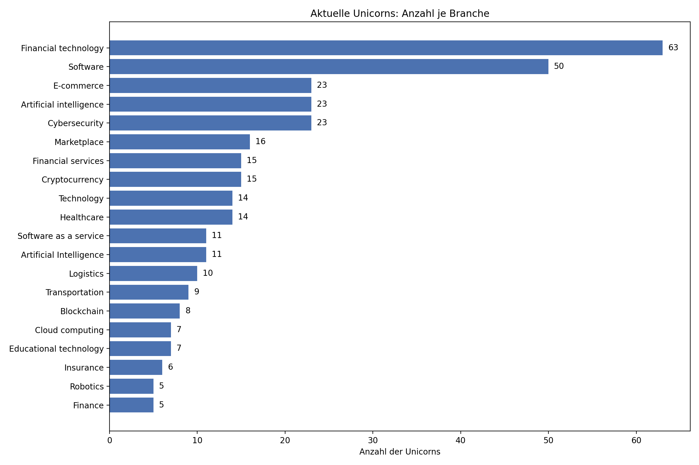
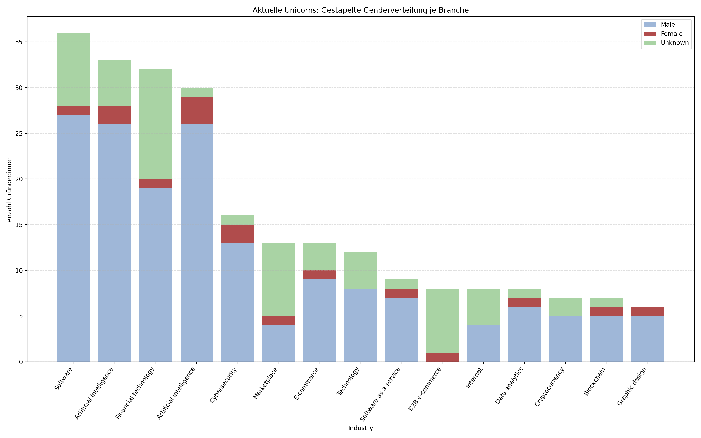
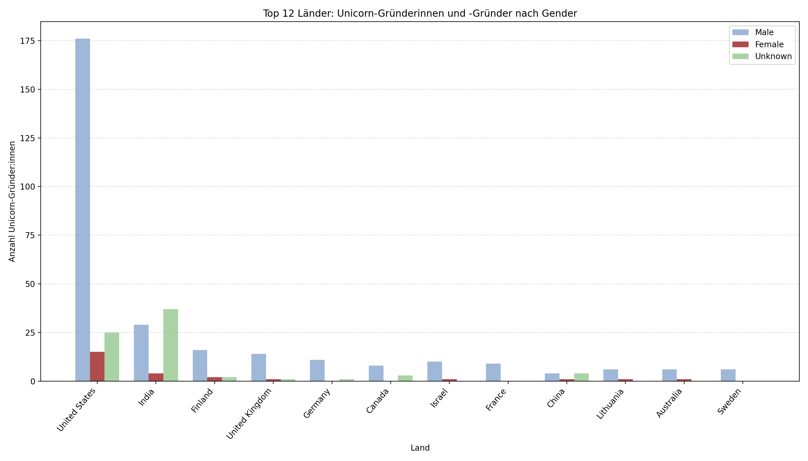
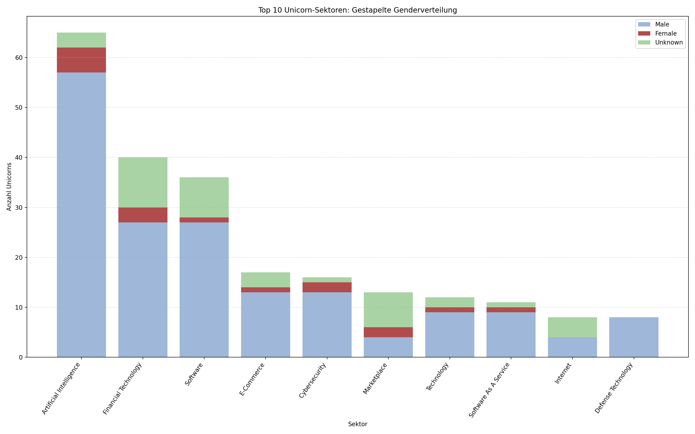
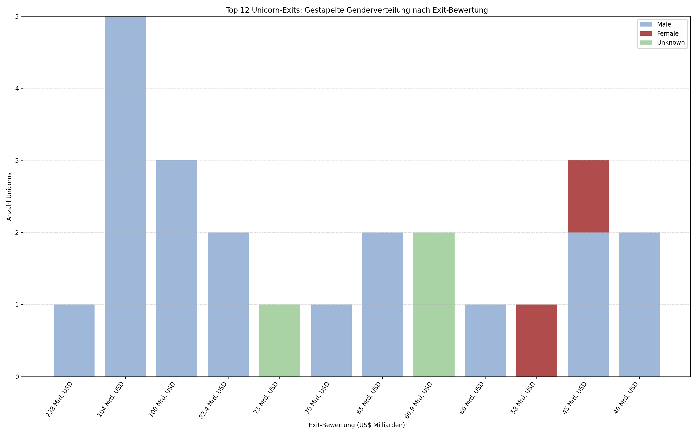
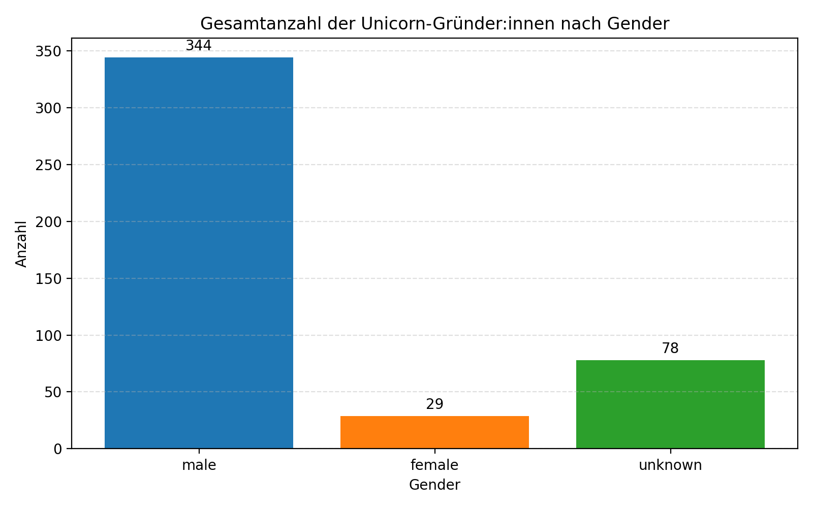
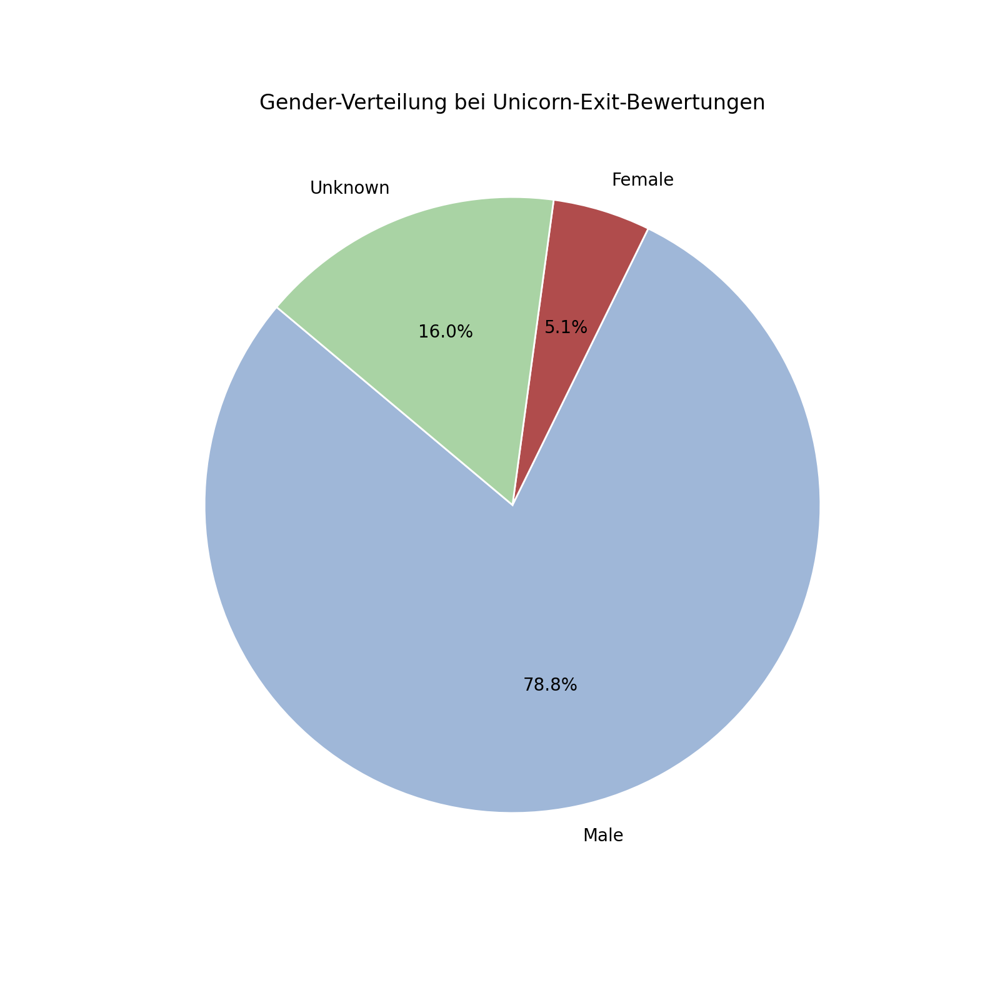
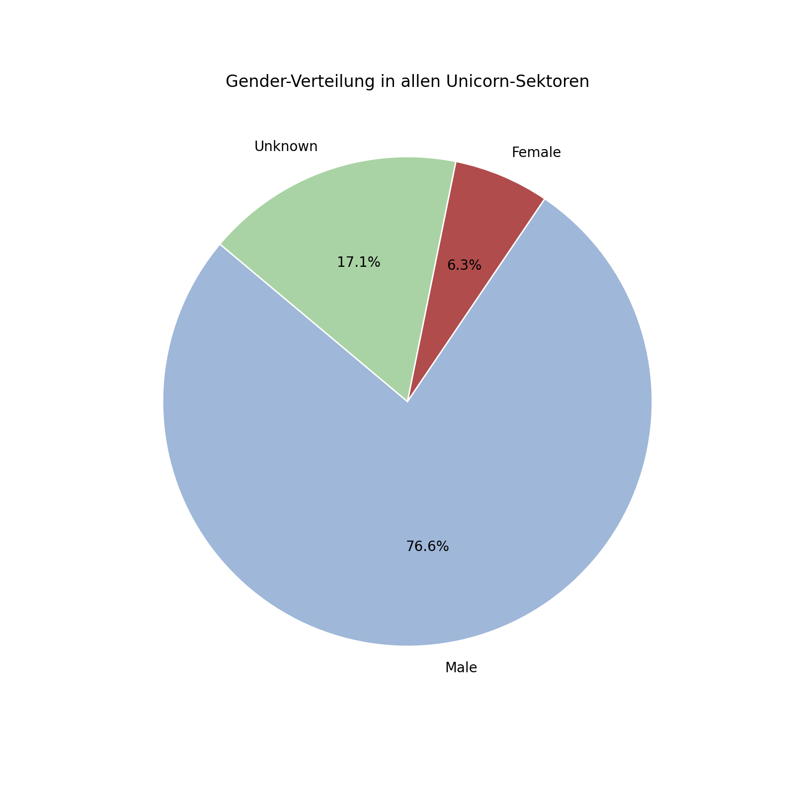
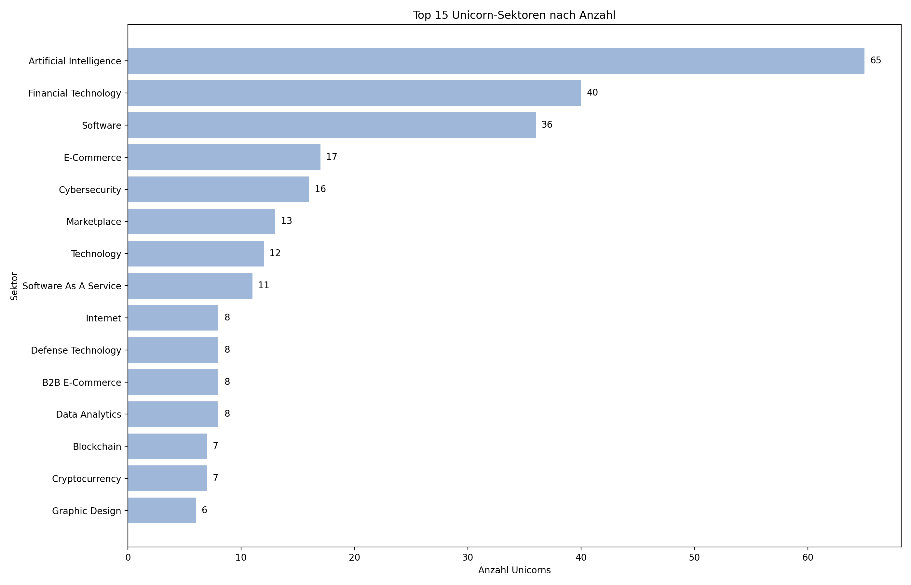

Unicorn Gender Charts
Diese Seite zeigt die generierten Diagramme zur Gender-Verteilung von Unicorns.
Aktuelle Unicorns: Anzahl je Branche

Aktuelle Unicorns: Gestapelte Genderverteilung je Branche

Top 12 Länder: Unicorn-Gründer:innen nach Gender

Top 10 Unicorn-Sektoren: Gestapelte Genderverteilung

Top 12 Unicorn-Exits: Gestapelte Genderverteilung

Gesamtanzahl der Unicorn-Gründer:innen nach Gender

Gender-Verteilung bei Unicorn-Exit-Bewertungen

Gender-Verteilung in allen Unicorn-Sektoren

Top 15 Unicorn-Sektoren nach Anzahl
